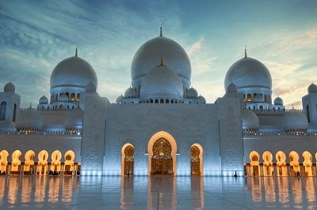
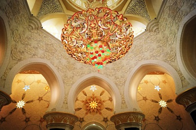
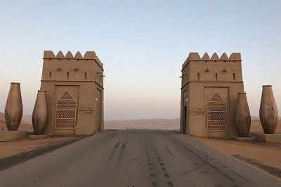
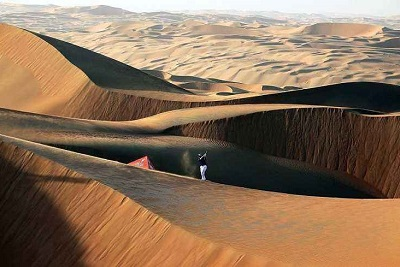
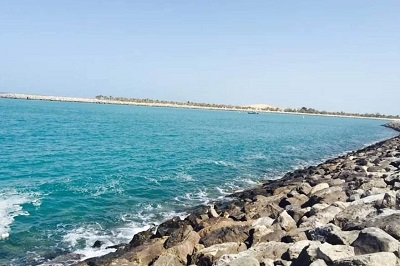
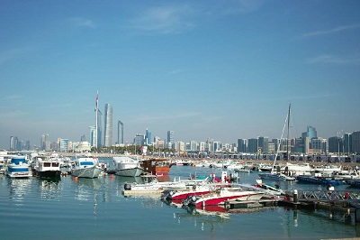
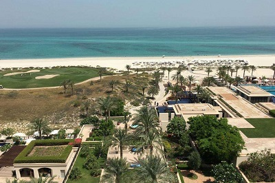
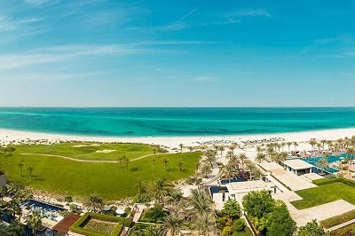

morly旅游网
无论您是第一次游览阿布扎比还是故地重游，无论您在梦幻般的水上乐园嬉戏泛起浪花、还是惊叹于最高峰杰布哈菲特的质朴粗犷，是体验世界上最快的过山车带来的惊心动魄，还是置身于唯一一家可以眺望F1赛道的酒店，亦或是在世界最斜人造塔一角用餐，您都会发现吸引您重游阿布扎比的理由。
阿布扎比（阿布扎比酋长国）一般指阿布扎比酋长国 阿布扎比酋长国是阿拉伯联合酋长国最大的酋长国，面积67340平方公里，其中包括大约200个岛屿，占全国总面积的86.68%。人口236万（2016年），约占全国总人口的42%。城市主要有首府阿布扎比市、东部省省府艾因和西部省省府扎耶德城。
阿布扎比酋长国，又译阿布达比（港台译法）。阿拉伯语作أبو ظبي （拉丁字母译法为Abu Dhabi），意为“羚羊之父”。阿布扎比是阿拉伯联合酋长国（旧称乎停战诸国（Trucial States）、停战阿曼（Trucial Oman））七个酋长国中最大一个酋长国。
占阿联酋总面积3/4以上。因陆地和波斯湾海底有藏量丰富的油田，为阿联酋最富有的两个酋长国之一（另一个为邻邦迪拜）。北临波斯湾，海岸线长约450公里（280哩）。沿岸荒无人烟，多盐沼地和沿海岛屿。西邻卡塔尔（Qatar）、南接沙特阿拉伯、东连阿曼。在阿拉伯联合酋长国内，大部环绕迪拜，小部分在北方与沙迦酋长国（Sharjah）交界。
谢赫扎伊德清真寺
伊斯兰教是整个阿拉伯世界的灵魂所在，这座阿联酋最大，世界第三大的谢赫扎伊清真寺是阿布扎比必去的朝圣地，也是世界上唯一一座允许女性从正门进入的清真寺。谢赫扎耶德清真寺是世界上最宏伟的清真寺之一，这座清真寺是为了纪念阿联酋国父扎耶德·本·苏丹·阿尔·纳罕酋长（1918-2004）而建，历时12年，造价达55亿美元，汇集世界各地的顶级建材和优秀艺术家，铸造出了奢华的宗教圣地。
 里瓦沙漠
阿联酋的大部分地区都是沙漠，在广袤无垠的沙海上，骑骆驼漫步沙漠抑或坐越野车滑沙，对于生活在城市里的人都是一番别致体验。离阿布扎比比较近的有艾恩(Al Ain Desert)沙漠和里瓦(Liwa Desert)沙漠比较推荐Liwa沙漠的原因是：它被称为“世界上最性感的粉红色沙漠”，由于富含各种矿物，在不同光线和角度下，沙漠会呈现斑斓之色。这片被称为空域(Empty Quarter)的沙漠位于阿联酋和沙特交界，几百年来一直鲜为外界所知，就像阿布扎自身的气质，低调神秘。
 滨海大道
都说阿布扎比是一半沙漠，一半海水，阿布扎比有一条10多公里的海滨大道，举世闻名，绵延千里的海岸线上铺洒着中东阳光。大道两旁不仅有高大的桉树、椰枣树和灌木树丛，还建有修整得各具风格的小花园、绿草地和喷水池，与路旁的湛蓝大海融成一片。
 萨迪亚特岛
萨迪亚特岛是阿布扎比的文化中心，距离阿布扎比市中心7分钟、阿布扎比国际机场仅20分钟路程的27平方公里的萨迪亚特岛正在进行全面的修建。修建完成后，它将成为全球知名的世界级娱乐、 居住、 商务、 文化中心， 拥有世界最大的超级文化资产组合，包括由获奖建筑师设计的扎伊德国家博物馆、 阿布扎比卢浮宫和阿布比古根海姆。每一家博物馆都拥有最先进的建筑和科技，都陆续在2018年对外开放。
 内容整理至网络，如有侵权，请联系我们！1255394075@qq.com